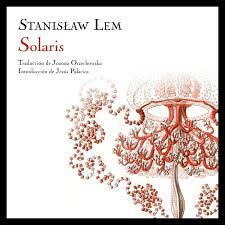

Book Friend

"Un lector vive mil vidas antes de morir. El hombre que nunca lee vive solo una." - George R.R. Martin
Esta página busca dar a conocer pequeñas reseñas sobre libros que recomiendan lectores de muchas partes del mundo. Si tú quieres ser parte de esto, déjanos tu recomendación al final de la página
Novela
La novela es un género literario que se destaca por su extensión y complejidad narrativa. A lo largo de la historia, ha evolucionado y se ha diversificado en numerosas subgéneros y estilos, lo que la convierte en una de las formas más flexibles y populares de la literatura. La novela se caracteriza por contar historias a través de la prosa, lo que le permite explorar de manera detallada los pensamientos, emociones y experiencias de sus personajes. A menudo, las novelas abordan una amplia gama de temas y géneros, desde la ciencia ficción y la fantasía hasta la novela histórica, romántica, de misterio, entre otros. A través de su capacidad para sumergir al lector en mundos imaginarios o retratar la vida cotidiana con profundidad, la novela ha desempeñado un papel fundamental en la literatura y la cultura a lo largo de los siglos.
Recomendaciones
"El Extranjero"
Es una novela existencialista escrita por el autor franco-argelino Albert Camus. La historia se centra en Meursault, un personaje apático y desapegado que enfrenta un mundo absurdo y sin sentido. Después de cometer un crimen aparentemente sin motivo, Meursault se encuentra en un conflicto con la sociedad y el sistema legal. La novela explora temas como la alienación, la indiferencia y la filosofía existencialista, convirtiéndola en una obra emblemática que cuestiona la naturaleza humana y la búsqueda de significado en un universo aparentemente indiferente.
"El Vino del Estío"
Es una novela corta escrita por el autor de ciencia ficción y fantasía Ray Bradbury. La historia se desarrolla en un pequeño pueblo en Illinois durante el verano de 1928 y se centra en las experiencias de un niño llamado Douglas Spaulding. A través de las aventuras de Douglas y su pandilla de amigos, la novela captura la magia y la nostalgia de la infancia, explorando temas de crecimiento, pérdida de inocencia y la belleza efímera del verano. La prosa poética de Bradbury y su capacidad para evocar la sensación de asombro hacen de esta obra una celebración de la niñez y el poder de la imaginación.
"El niño que vivía en las estrellas"
Es una novela juvenil escrita por el autor español Jordi Sierra i Fabra. La historia sigue a Martín, un niño que se encuentra en un hospital debido a una enfermedad terminal. Durante su estancia en el hospital, Martín conoce a un extraño niño que dice ser un extraterrestre. A medida que desarrolla una amistad con este niño, Martín comienza a cuestionar su comprensión del mundo y su percepción de la realidad. La novela aborda temas de amistad, esperanza y la exploración de lo desconocido, y ofrece una perspectiva conmovedora y reflexiva sobre la vida y la muerte.
Terror
El terror se distingue por su capacidad para explorar temores profundos y universales, como el miedo a la muerte, lo sobrenatural, la locura y el mal. A lo largo de la historia, ha evolucionado y se ha diversificado en numerosas subcategorías, incluyendo el terror gótico, el terror psicológico, el terror cósmico, el terror de supervivencia y el terror de lo cotidiano, entre otros. El género de terror desafía a los lectores y espectadores a confrontar sus miedos y a explorar lo desconocido, lo que lo convierte en una forma poderosa de expresión artística y narrativa.
Recomendaciones
"El Huésped"
Es una colección de cuentos de la escritora mexicana Amparo Dávila. En estos relatos, Dávila teje narrativas inquietantes que exploran lo siniestro y lo macabro en situaciones aparentemente cotidianas. Sus historias están llenas de atmósfera oscura y personajes perturbadores que generan una sensación constante de ansiedad en el lector. El libro es un ejemplo sobresaliente de la literatura de horror gótico y psicológico en lengua española, y Amparo Dávila es reconocida por su habilidad para crear un ambiente de inquietud y desconcierto a lo largo de sus cuentos.
"El gato negro"
Es un cuento de horror clásico escrito por el maestro del terror, Edgar Allan Poe. La historia sigue al narrador, un hombre que una vez fue amante de los animales y que, sin embargo, se convierte en un ser cruel y perverso debido a una serie de eventos sobrenaturales. La narración explora temas como la culpa, la locura y el poder corruptor de la maldad. Poe utiliza una prosa vívida y perturbadora para sumergir al lector en la mente atormentada del personaje principal, lo que hace de "El gato negro" un cuento inolvidable y emblemático del género de terror.
Ciencia Ficción
La ciencia ficción se distingue por su capacidad para abordar cuestiones profundas y universales, como la relación entre la humanidad y la tecnología, los dilemas éticos y morales de los avances científicos, y la exploración de lo desconocido en el cosmos y en el futuro. A menudo, esta literatura utiliza el futuro como un espejo para reflexionar sobre temas contemporáneos y desafíos de la sociedad, lo que la convierte en un género especulativo y socialmente relevante.
Recomendaciones
"El Cuento de la Criada"
Es una novela de ciencia ficción distópica escrita por la autora canadiense Margaret Atwood. La historia está ambientada en un futuro totalitario donde las mujeres han perdido sus derechos y son utilizadas como criadas para reproducir a las élites gobernantes. La narradora principal, conocida como Defred, comparte sus experiencias y pensamientos mientras lucha por sobrevivir en un mundo opresivo. La novela aborda temas de género, poder, religión y control estatal. Es un poderoso comentario sobre la opresión y la resistencia, y se ha convertido en un clásico de la literatura feminista y de ciencia ficción.
"Solaris"
Es una novela de ciencia ficción escrita por el autor polaco Stanislaw Lem. La historia se desarrolla en una estación espacial que orbita el planeta Solaris, un mundo oceánico habitado por una misteriosa y enigmática forma de vida. Los científicos en la estación intentan comprender y comunicarse con esta entidad, pero descubren que sus propias mentes y recuerdos se ven afectados por Solaris de maneras incomprensibles. La novela explora temas de la percepción, la comunicación y la naturaleza de la realidad. "Solaris" es una obra de ciencia ficción filosófica que desafía las nociones convencionales de contacto extraterrestre y la relación entre la humanidad y lo desconocido. Ha influido en la ciencia ficción y la filosofía contemporáneas.
Misterio
Las historias de misterio a menudo incluyen elementos como pistas, sospechosos, giros argumentales y red herrings (pistas falsas) para mantener al lector o espectador comprometido en la resolución del enigma. Este género puede variar en su tono y estilo, desde el misterio clásico y detectivesco hasta el thriller psicológico y la novela negra.
Recomendaciones
"Quien pierde paga"
Es una novela de suspenso y misterio escrita por el renombrado autor de terror, Stephen King. Es la segunda entrega de la trilogía de Bill Hodges, que comenzó con "Mr. Mercedes". La historia sigue al detective retirado Bill Hodges mientras investiga un nuevo caso relacionado con el asesino en serie Brady Hartsfield, quien ha estado en coma durante años. El libro combina elementos de suspense, thriller y lo sobrenatural, y explora la naturaleza obsesiva de la venganza y la lucha entre el bien y el mal. Con su narrativa envolvente y personajes complejos, King teje una trama que mantiene a los lectores en vilo hasta el final.
"La desaparición de Stephanie Mailer"
Es una novela de misterio escrita por el autor suizo Joël Dicker. La historia gira en torno a un crimen sin resolver en la pequeña ciudad costera de Orphea, Nueva York, que ocurrió hace más de veinte años. La trama se complica cuando la periodista Stephanie Mailer acusa públicamente al fiscal del caso de haber cometido un error en la investigación. Sin embargo, antes de que pueda proporcionar pruebas, Stephanie desaparece misteriosamente. La novela se adentra en los secretos enterrados de la ciudad y sigue a varios personajes que buscan la verdad. Con giros y revelaciones sorprendentes, Dicker crea un misterio apasionante que mantiene a los lectores intrigados y comprometidos en la resolución del enigma.
"Un libro es un regalo que puedes abrir una y otra vez." - Garrison Keillor
¡Gracias por visitarnos!